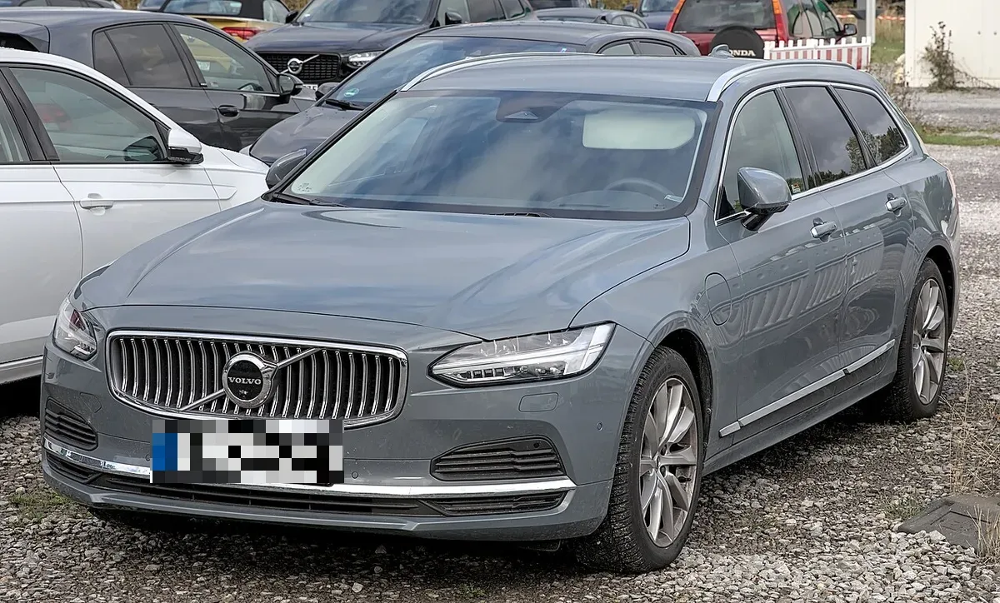
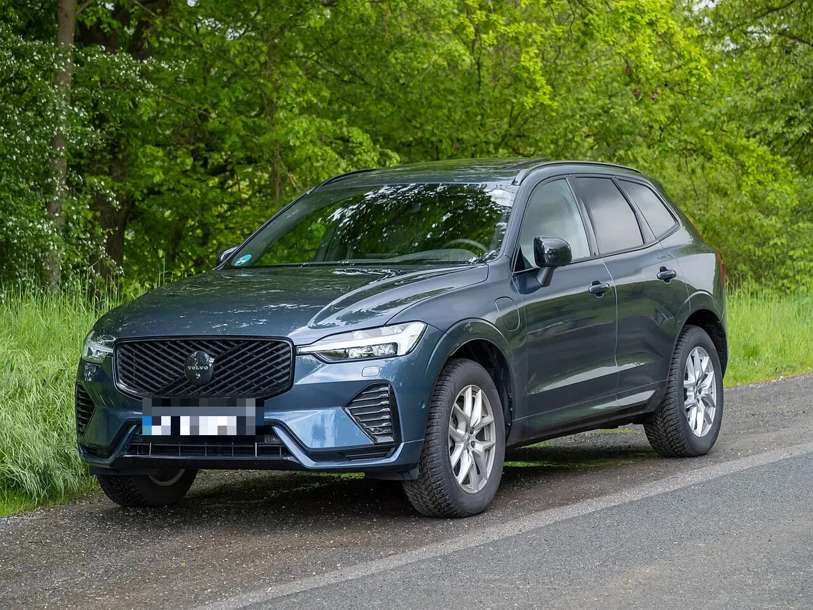
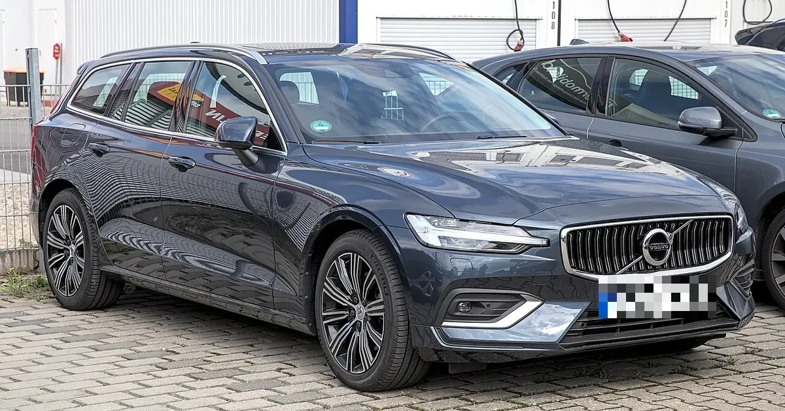
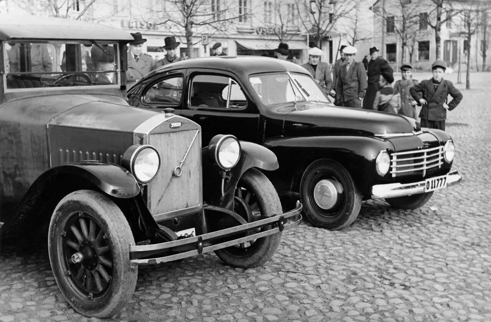
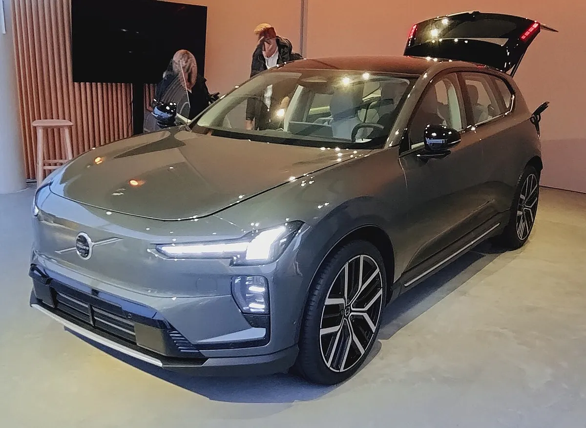
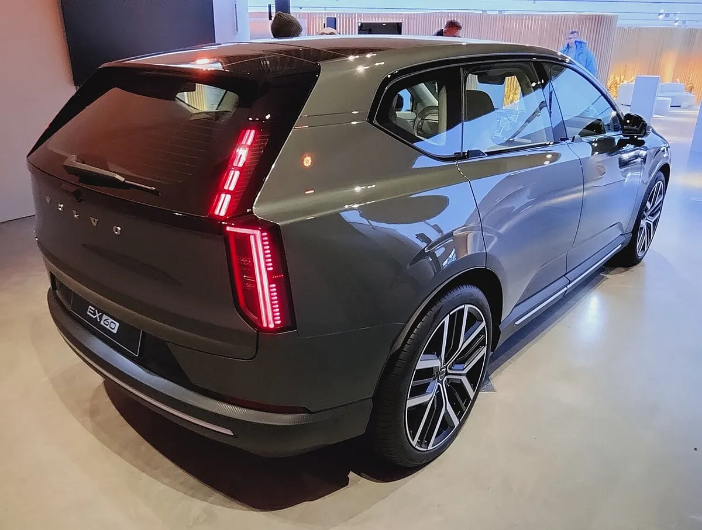

▲ 볼보 P1800 ES(2017년 독일 촬영). 이번 발표 배경 화면에 이 차의 이미지가 비쳤다고 오토 익스프레스가 전했다 ⓒ Wikimedia Commons / Berthold Werner (CC BY-SA 4.0)
"볼보 같은 브랜드가 왜건을 다시 선보인다면 환상적일 것." 신차 13종 계획 보도에서 가장 눈길을 끈 이 한마디는 볼보 최고기술책임자 알렉산더 페트로프스키(Alexander Petrofski)가 왜건 가능성을 묻는 질문을 받고 한 답이다. 영어 원문 발언은 "I think it would be fantastic if a brand like Volvo could bring back wagons, so stay tuned, more to come."로 영국 오토 익스프레스가 전했고, 위 한글 문장은 카프리즘이 옮긴 번역이다. 즉 왜건 출시 발표가 아니라 "지켜봐 달라"는 암시다.
이 글은 국내 매체 오토헤럴드의 9월 21일자 보도를 출발점으로 삼되, 발표일·수치·인용은 오토 익스프레스(9월 17일), 로이터 보도를 실은 RTÉ(9월 17일), 일렉트렉(9월 17일)으로 대조했다. 볼보카 글로벌 뉴스룸 원문은 접속 제한으로 직접 열어 보지 못했다는 점을 먼저 밝힌다.

▲ 현재 판매 중인 볼보 V90 왜건(독일 촬영). 볼보가 왜건을 다시 내놓는다는 말이 나오는 배경에는 이런 차의 전통이 있다 ⓒ Wikimedia Commons / Alexander Migl (CC BY-SA 4.0)
1. 언제, 어디서 나온 발표인가
세 매체가 공통으로 전한 바에 따르면 발표는 2026년 9월 17일(목) 볼보카의 전략 업데이트(투자자 행사)에서 나왔다. 로이터 보도는 스톡홀름에서 열린 투자자의 날을 앞두고 볼보가 밝힌 내용이라고 적었다. 오토헤럴드(김훈기 기자)는 나흘 뒤인 9월 21일 이를 국내에 소개했다. 제목의 "역대 최대 공세"는 볼보가 쓴 "가장 야심 찬 글로벌 제품 공세(most ambitious global product push)" 표현(일렉트렉 인용)에 해당한다.
📌 확인 범위
· 발표 시점: 2026년 9월 17일 전략 업데이트(오토 익스프레스·일렉트렉·로이터/RTÉ 일치)
· 직접 인용 확인: 페트로프스키 CTO의 왜건 발언(오토 익스프레스 영어 원문), 사무엘손 CEO의 "우리 쇼룸은 2030년에 매우 달라 보일 것"(일렉트렉)
· 미확인: 볼보카 뉴스룸 원문(접속 제한), 13종 각각의 차명·출시 시기
2. 13종은 어떻게 나뉘나: 서구 7종, 중국 6종
13종이라는 숫자는 2030년 말까지 출시하는 신차를 합친 값이다. 공통으로 확인되는 구성은 아래와 같다.
| 구분 | 차종 수 | 파워트레인 | 플랫폼·기술 |
|---|---|---|---|
| 서구 시장(미국·유럽·영국) | 7종 | 순수 전기차와 3세대 하이브리드 | SPA2·SPA3 아키텍처, 컴퓨팅 플랫폼 HuginCore(일렉트렉) |
| 중국 전용 | 6종 | 전기차와 하이브리드 | 지리자동차(Geely)와 공유 플랫폼·별도 기술 스택·공급망 |
| 합계 | 13종 | 전기·하이브리드 병행 | 2030년 말까지 |
오토 익스프레스는 서구 모델 가운데 내연·하이브리드 계열은 XC60·XC90이 쓰는 SPA2, 전기차는 EX60이 쓰는 SPA3를 기반으로 한다고 정리했다. 중국 6종은 지리와의 협업으로 "진짜 중국 속도"로 개발된다고 전했다. 볼보는 이미 중국 전용으로 EM90 MPV와 XC70 SUV를 갖고 있다는 설명도 덧붙였다.

▲ 서구 시장의 내연·하이브리드 계열은 SPA2 기반이라고 설명됐다. 사진은 XC60 T8 PHEV(2026년 5월 독일 촬영) ⓒ Wikimedia Commons / Matti Blume (CC BY-SA 4.0)
3. 확인된 신차와 아직 비어 있는 칸
오토 익스프레스는 볼보가 이 모델들이 각각 무엇인지는 아직 확인하지 않았다고 썼다. 13종 목록 자체는 공개되지 않은 상태다. 알려진 조각은 다음과 같다.
| 항목 | 내용 | 근거 |
|---|---|---|
| 다음 전기차 | 2027년 출시, SPA3 기반 | 오토 익스프레스, 오토헤럴드 |
| 미국용 전기 SUV | "대형 D세그먼트 전기 SUV", EX60과 EX90 사이를 채울 위치 | 오토 익스프레스 |
| 3세대 하이브리드 | 개발 중. 발표 직전 9월 중순 XC60·XC90에 장거리 플러그인 하이브리드가 먼저 공개됨 | 일렉트렉·오토 익스프레스 |
| 디자인 콘셉트 | 2027년 봄 공개 예정(창립 100주년) | 일렉트렉·오토 익스프레스 |
| EX40 후속(EX50) | 2027년 말까지 미국에서 EX40을 대체할 전망, 약 5만 달러 시작가 추정 | 일렉트렉이 오토모티브 뉴스 보도를 재인용 |
EX50 관련 내용은 볼보 EX50 기사에서 따로 다뤘다. 13종 계획의 일부일 가능성은 있어도, 이번 발표에서 볼보가 직접 확정했다는 근거는 확인하지 못했다. 해외 보도(일렉트렉)가 인용한 시기는 "2027년 말까지"이고, 카프리즘 EX50 기사의 시기 예상(2027년 가을)과는 표현이 다르다. 둘 다 공식 확정이 아닌 보도·전망이라는 점은 같다.
4. "왜건 부활"은 누가, 어떤 맥락에서 말했나
왜건 이야기의 근거는 세 가지다. 세 가지 모두 "왜건을 만든다"는 공식 발표는 아니다.
✅ 왜건 관련 발언·정황 3가지
· CTO 페트로프스키: 새 왜건 가능성을 묻는 질문에 "볼보 같은 브랜드가 왜건을 되살린다면 환상적일 것"이라며 "계속 지켜봐 달라, 더 많은 것이 나올 것"이라고 답했다(오토 익스프레스, 영어 원문에서 번역)
· 디자인 총괄 잉엔라트: 발표 배경 화면에 1960~70년대 P1800 ES 슈팅브레이크 이미지가 나왔다. 오토 익스프레스는 이를 "배경에 보였다"고만 적었고 직접 발언은 아니다
· SPA3 설명: 다음 전기차는 SUV뿐 아니라 세단·왜건 같은 낮은 차체까지 받칠 수 있게 설계된 플랫폼 위에서 나온다는 설명(오토 익스프레스)
| 구분 | 내용 | 성격 |
|---|---|---|
| 영어 원문(따옴표) | "I think it would be fantastic if a brand like Volvo could bring back wagons, so stay tuned, more to come." | 오토 익스프레스가 옮긴 CTO 발언 원문 |
| 카프리즘 번역 | "볼보 같은 브랜드가 왜건을 다시 선보인다면 환상적일 것. 계속 지켜봐 달라, 더 많은 것이 나올 것." | 위 원문의 한글 옮김(공식 번역 아님) |
| 카프리즘 요약 | 왜건 출시 확정이 아니라 가정형 답변과 암시 | 기사 해석(볼보의 공식 입장 아님) |
| 보도 내용 전달(따옴표 없음) | SPA3는 낮은 차체에도 유리하다는 잉엔라트의 설명, P1800 ES 배경 이미지 | 오토 익스프레스 보도를 요약한 것 |
잉엔라트는 스케이트보드형 전기차 플랫폼이 SUV에는 잘 맞지만 낮은 차체에는 한계가 있고, SPA3는 이런 제약 없이 "아주 매력적인 비율의 낮은 차"를 만들 수 있다고 말했다고 오토 익스프레스는 전했다. 그는 "우리 역사에 전설적인 차를 더 보태고 싶다"는 야심도 밝혔다(같은 매체, 번역).

▲ V60 왜건(독일 촬영). 볼보는 지금도 일부 시장에서 왜건을 팔고 있다. 전기차 시대에 이어갈 후속이 있느냐가 관건이다 ⓒ Wikimedia Commons / Alexander Migl (CC BY-SA 4.0)
그렇다면 왜건이 13종에 들어 있다고 볼 수 있을까. 가능성은 높아졌지만 확정은 아니다. 신차 목록이 공개되지 않았고, CTO도 질문에 "환상적일 것"이라고 가정형으로 답했기 때문이다. 일렉트렉은 EX60이 SPA3 기반이며 왜건과 세단을 포함한 여러 차체 형태를 지원한다고 적었다. 플랫폼이 왜건을 지원한다는 것과 왜건이 계획에 있다는 것은 별개의 이야기다.
✅ 왜건 보도를 읽을 때 구분할 3가지
· 확정된 것: 13종 계획과 구성(서구 7·중국 6), 2027년 SPA3 기반 전기차, 2027년 봄 콘셉트 공개
· 암시에 그친 것: 왜건 부활(CTO의 가정형 답변과 "지켜봐 달라"), 낮은 차체 모델 개발 의지
· 아직 없는 것: 차명·출시 시점·가격, 한국 도입 계획
5. 왜 하필 지금, 왜건인가
오토 익스프레스는 2027년이 볼보 창립 100주년이라는 점을 들어 타이밍이 이상적이라고 썼다. 볼보는 전통적으로 왜건 이미지가 강한 브랜드이고, 새 제품 계획이 지금 진출하지 않은 세그먼트로 확장하는 내용을 담고 있다는 점도 지적했다. 전기 왜건은 그중 하나로 언급됐다.

▲ 볼보의 첫 차와 PV444를 함께 찍은 흑백 사진(Wikimedia 파일 설명 기준). 2027년은 볼보 창립 100주년이다 ⓒ Wikimedia Commons / Tekniska museet (CC BY 2.0)
한편 잉엔라트는 이번 행사에서 물리 버튼의 복귀도 확인했다(일렉트렉). 이 부분은 볼보 물리 버튼 복귀 기사에서 다뤘으므로 이 글에서는 반복하지 않는다. 대신 그는 desirability(갖고 싶은 정도)가 재무적 성공에도 중요한 요소라며 루이비통·롤렉스를 비교 대상으로 삼았다고 일렉트렉이 전했다. 프리미엄 가격을 받으려면 디자인이 먼저라는 논리다.

▲ SPA3 플랫폼 첫 전기차로 소개된 볼보 EX60(전시 차량). 차체 형태는 SUV다 ⓒ Wikimedia Commons / Herranderssvensson (CC BY-SA 4.0)
6. 숫자로 보면: 마진 8% 목표와 부품 공용화
13종 계획은 디자인 이야기이기 전에 수익성 이야기다. 로이터 보도(RTÉ 게재)에 따르면 볼보는 영업이익률(EBIT 마진) 목표를 2025년 3.5%에서 8% 초과로 끌어올리고 시장점유율을 두 배로 늘리겠다고 밝혔지만 달성 시점은 제시하지 않았다. 시티 애널리스트는 치열한 경쟁 때문에 시장이 점유율 두 배 목표 가능성을 낮게 볼 것이라는 의견을 냈다고 같은 기사는 전했다.
| 항목 | 수치 | 비고 |
|---|---|---|
| 영업이익률 목표 | 3.5%(2025년) → 8% 초과 | 달성 시점 미제시 |
| 시장점유율 | 두 배 목표 | 시티는 회의적 시각 |
| 지리와의 부품 공용 비율 | 현재 약 10% → 30% | 2030년까지 재료비 약 5% 절감 기여 |
| 앞선 비용 절감 계획 | 180억 스웨덴 크로나(약 18억 3,000만 달러) | 지난해 4월 발표된 계획으로 보도됨 |
로이터는 볼보가 2021년 "2020년대 중반까지 EBIT 마진 8~10%"를 목표로 내걸었다가 여러 차례 낮춘 끝에 2025년에는 재무 전망 자체를 철회했다고 정리했다. 그래서 이번 13종 계획은 신차를 많이 내겠다는 선언인 동시에 지난 목표의 신뢰를 되찾기 위한 계획으로 읽힌다. 이 계획을 발표한 하칸 사무엘손 CEO는 임시 복귀한 상태이며, 볼보 이사회는 9월 20일 스코다 CEO 출신 클라우스 젤머를 차기 CEO로 선임해 늦어도 2027년 10월 1일까지 취임한다고 밝혔다. 즉 13종 계획을 실행하는 책임자가 바뀔 예정이라는 뜻이다. 경영진 교체 소식은 볼보 CEO 교체 기사에서 따로 다뤘다.

▲ EX60 뒷모습. 후속 SPA3 차종은 세단·왜건 같은 낮은 차체도 받칠 수 있다고 설명됐다 ⓒ Wikimedia Commons / Herranderssvensson (CC BY-SA 4.0)
7. 한국 독자가 가져갈 것과 확인 못 한 것
이번 13종 계획에서 한국 출시 차종·시기·가격은 확인되지 않았다. 오토 익스프레스·일렉트렉·로이터 보도에서 한국 시장 관련 언급은 찾지 못했다. 그래서 이 글에서는 한국 판매 일정을 단정하지 않는다. 다만 국내에서 이미 확인된 볼보 관련 정보는 아래 기사에서 볼 수 있다.
| 주제 | 확인된 내용 | 링크 |
|---|---|---|
| ES90 국내 인증 | 복합 520km 인증(글로벌 WLTP 706km와 차이) | 기사 보기 |
| EX30 국내 시승 | 국내 판매 중인 소형 전기 SUV 시승 | 기사 보기 |
✅ 한국 독자가 볼 포인트
· 국내 판매 모델(EX30·ES90 등)과 이번 13종 계획의 연결 여부는 발표되지 않았다
· 이번 발표 보도에서 한국용 신형 왜건이나 한국 시장 언급은 찾지 못했다
· 한국 출시는 항상 본사 발표보다 늦으므로, 한국법인 보도자료를 따로 확인해야 한다
정리하면 2027년 SPA3 신차가 한국에 언제 오느냐는 이번 발표에서 답이 나오지 않았다. 왜건이 실제로 나오더라도 한국 도입 여부와 시점은 현재로서는 알 수 없다.
8. 앞으로 확인할 일정
✅ 지켜볼 4가지
· 2026년 가을~2027년 초: XC60·XC90 장거리 플러그인 하이브리드 생산·인도 시작(일렉트렉: 생산은 올가을, 고객 인도는 2027년 초 예정)
· 2027년: SPA3 기반 다음 전기차 출시
· 2027년 봄: 다음 디자인 시대를 예고하는 콘셉트카 공개
· 그 이후: 13종 구성 공개 여부, 왜건·세단 같은 낮은 차체 포함 여부
공식 자료는 볼보카 글로벌 뉴스룸에서 확인할 수 있다. 볼보카 글로벌 뉴스룸 바로가기
9. 요약
볼보는 2026년 9월 17일 전략 업데이트에서 2030년 말까지 신차 13종(서구 7종, 중국 6종, 전기·하이브리드 병행)을 내겠다고 밝혔지만 차종 목록은 공개하지 않았다. 다음 전기차는 2027년 SPA3 기반이고, 새 디자인을 예고하는 콘셉트카는 2027년 봄 공개된다.
왜건은 확정이 아니라 암시다. CTO 페트로프스키가 질문을 받고 볼보 같은 브랜드가 왜건을 되살린다면 환상적일 것이라며 지켜봐 달라고 답했고, SPA3는 세단·왜건 같은 낮은 차체를 받칠 수 있도록 설계됐다. 한국 출시 계획은 확인되지 않았다. 수익성 목표(EBIT 3.5%에서 8% 초과)는 달성 시점이 제시되지 않았다.